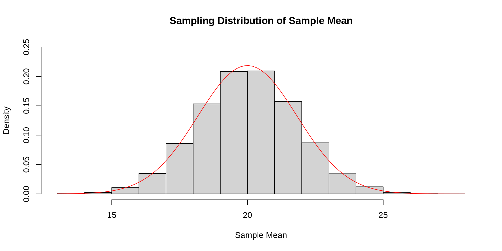

[1] 20.01591[1] 20[1] 1.821275[1] 1.825742Theorem 17.1
Let \(\boldsymbol{X} = (X_1, X_2, \dots, X_n)\) be \(n\) independent random variables with mean \(\text{E}[X_i] = \mu\) and variance \(\text{Var}[X_i] = \sigma^2\). Then the following are true:
\[ \begin{align} \text{E}[\bar{X}] &= \mu \\ \text{Var}[\bar{X}] &= \frac{\sigma^2}{n} \\ \end{align} \]
\[ \begin{align} \text{E}\left[\frac{1}{n}\sum_{i=1}^n X_i\right] &= \frac{1}{n}\sum_{i=1}^n \text{E}[X_i] \\ &= \frac{1}{n} \sum_{i=1}^n \mu \\ &= \frac{1}{n} n \mu \\ &= \mu \end{align} \]
\[ \begin{align} \text{Var}\left[\frac{1}{n}\sum_{i=1}^n X_i\right] &= \frac{1}{n^2}\sum_{i=1}^n \text{Var}[X_i] \\ &= \frac{1}{n^2} \sum_{i=1}^n \sigma^2 \\ &= \frac{1}{n^2} n \sigma^2 \\ &= \frac{\sigma^2}{n} \end{align} \]
Example 17.1
A manufacturing company produces steel rods, and the length of each rod (in cm) follows a normal distribution with a mean of 120 cm and a standard deviation of 5 cm.
If the inspector instead randomly selects a sample of 25 rods and records their average length, what are the expected value and standard deviation of the sample mean?
We have that \(\mu = 120\) and \(\sigma = 5\). That means that \(\text{E}[\bar{X}] = 120\) and \(\text{SD}[\bar{X}] = \frac{5}{\sqrt{25}} = 1\)
Example 17.2
A company packages bags of coffee, and the weight (in grams) of the coffee in each bag varies slightly due to the filling process. The sampling distribution of the sample mean for samples of size 36 has a mean of 500 grams and a standard deviation of 2 grams.
What are the expected weight and the standard deviation of an individual bag?
In this case we are given \(\text{SD}[\bar{X}] = 2\) and \(\text{E}[\bar{X}] = 500\). This implies that \(\mu = 500\) and \(\sigma = 2 \times \sqrt{36} = 12\)
Example 17.3
A bakery produces loaves of bread, and the weight of each loaf (in grams) follows a normal distribution with a mean of 600 grams and a standard deviation of 15 grams.
If we take a random sample of \(n=20\) loaves of bread, what would be the expected value and standard deviation of the sample mean weight?
YOUR ANSWER HERE
Definition 17.1
A sampling distribution is the distribution of a random-sample based statistic.
Theorem 17.2
Let \(\boldsymbol{X} = (X_1, X_2, \dots, X_n)\) be independent normal random variables with mean \(\mu\) and standard deviation \(\sigma\). Then the sampling distribution of the sample mean \(\bar{X}\) is as follows:
\[ \bar{X} \sim N\left(\mu, \frac{\sigma}{\sqrt{n}}\right) \]

Example 17.4
The lifespan (in hours) of a certain type of rechargeable battery follows a normal distribution with a mean of 1200 hours and a standard deviation of 150 hours.
If we take a random sample of \(n=40\) batteries, what would be the sampling distribution of \(\bar{X}\)?
Since \(\mu = 1200\), \(\sigma = 150\) and \(n = 40\), we get the sampling distribution of \(\bar{X}\) is:
\[ \bar{X} \sim N\left(1200, \frac{150}{\sqrt{40}}\right) \]
Example 17.5
Scores on a standardized math exam are normally distributed with a mean of 75 and a standard deviation of 8.
If we take a random sample of \(n=30\) scores, what would be the sampling distribution of \(\bar{X}\)?
Since \(\mu = 75\), \(\sigma = 8\) and \(n = 30\), we get the sampling distribution of \(\bar{X}\) is:
\[ \bar{X} \sim N\left(75, \frac{8}{\sqrt{30}}\right) \]
Example 17.6
A machine produces metal rods, and the diameter (in millimeters) of each rod follows a normal distribution with a mean of 10 mm and a standard deviation of 0.2 mm.
You take a random sample of 16 rods and you compute a sample mean of \(\bar{x} = 10.08\). What is the z-score (standardized score) for this value of \(\bar{x}\)?
YOUR ANSWER HERE
Corollary 17.1
Let \(\boldsymbol{X} = (X_1, X_2, \dots, X_n)\) be independent normal random variables with mean \(\mu\) and standard deviation \(\sigma\).
\[ P(\bar{X} \leq \bar{x}) = \Phi\left(\frac{\bar{x}-\mu}{\sigma/\sqrt{n}}\right) \]
For example, if the sample size is \(n=30\) and each \(X_i\) has a mean of 10 and a standard deviation of 3 and we want to find \(P(\bar{X} \leq 10.5)\) using R, we can do this in two ways.
Example 17.7
Scores on an assessment are normally distributed with an average score of 75 and a standard deviation of 8. You take a random sample of 25 scores. What is the probability that the average score for these 25 scores will be higher than 78?
Example 17.8
The time it takes for a package to be delivered by a shipping company follows a normal distribution with a mean of 3.5 days and a standard deviation of 1.2 days. You look at the delivery times for 10 packages. What is the probability that the average delivery time for these 10 packages is less than 3 days?
Example 17.9
The fuel efficiency (in miles per gallon) of a certain model of car is normally distributed with a mean of 30 mpg and a standard deviation of 4 mpg. What is the probability that the mean mpg for a random sample of 20 cars will be between 29.8 and 30.5 mpg?
Just like we can do with any random variable, we can also find quantiles for \(\bar{X}\). For normally distributed random variable, this is also done using \(\Phi^{-1}\), the normal quantile function.
For example, assume the \(X_i\) are normally distributed random variables with mean 20 and standard deviation 5. If we take a random sample of size \(n=25\) and we want to find the 85% percentile of \(\bar{X}\). This could be done in one of two ways:
Example 17.10
Assume that SAT scores are normally distributed with mean 1060 and standard deviation 195. A random sample of 15 scores is collected and you are told that the average score of these 15 scores is in the 75th percentile. What was the average score?
Example 17.11
The arrival times of flights at a busy airport are normally distributed with a mean delay of 10 minutes and a standard deviation of 6 minutes. The average delay for 40 flights at one airport is said to be in the 25th percentile. What was the average delay for these forty flights?
Example 17.12
The systolic blood pressure of adults in a certain population is normally distributed with a mean of 120 mmHg and a standard deviation of 15 mmHg. You are told that the average blood pressure reading for a group of 18 individuals was in the 95th percentile. What was the average blood pressure reading?